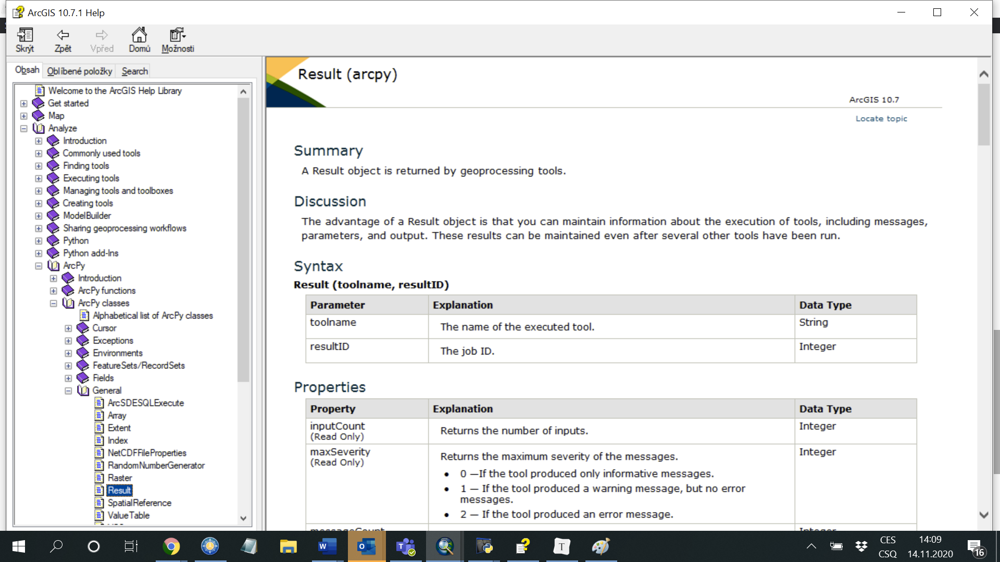

Lekce 10: Spouštění nástrojů ArcGIS pomocí balíčku ArcPy
Tato lekce uvádí do balíčku arcpy, který zprostředkovává funkcionalitu programu ArcGIS pro použití v rámci jazyka Python. To - mimo mnoho dalších věcí - zahrnuje možnost spouštění jednotlivých nástrojů z ArcToolboxu přímo ze skriptu, aniž bychom museli program ArcGIS (např. ArcMap) vůbec spouštět (musí však být pochopitelně nainstalován). Balíček arcpy, stejně jako celý Python, je distribuován společně s programem ArcGIS. Je však třeba dát si pozor na správnou verzi: v řadě ArcGIS Desktop 10.X se stále používá Python 2.7 (a ten je i distribuován spolu s programem). Od verze ArcGIS Pro se naopak používá poslední řada Pythonu, tedy 3.X. Mít v počítači více verzí Pythonu a používat vždy tu, která je třeba, by však nemělo představovat žádný velký problém.
V této lekci budeme používat data z území Libereckého kraje.
Spuštění nástroje a objekt Result
Prvním krokem ke zpřístupnění funkcionality ArcGIS do Pythonu je načtení modulu arcpy:
import arcpy
Chceme-li následně spustit nějaký nástroj z ArcToolbox, např. Clip, je syntaxe většinou následující:
arcpy.<Nazev_nastroje>_<alias_toolboxu>(<argumenty_nastroje>)
Alias příslušného toolboxu je důležité uvést, neboť v různých toolboxech mohou existovat nástroje stejného jména, které však dělají něco jiného (dobrým příkladem je právě nástroj Clip). Alias toolboxu můžeme snadno zjistit v jeho vlastnostech (pravý klik na toolbox v ArcMap a volba Properties). V případě nástroje Clip z nástrojové sady Analysis Tools -> Extract bude vypadat příkaz nějak takto:
arcpy.Clip_analysis(r"C:\cesta\k\vrstve\co\chci\orezat.shp", r"C:\orezova\vrstva.shp",
r"C:\cesta\kde\bude\ulozen\vysledek.shp")
Syntax jednotlivých nástrojů je vždy uveden na příslušné stránce nápovědy ArcGIS, kde je vždy uvedena sekce Syntax s vysvětlením všech parametrů a sekce Code sample s ukázkou použití. Používání nápovědy by se pro vás mělo stát běžnou záležitostí. V případě nástroje Clip vypadají příslušné sekce takto:

Úkol 1. Použijte nástroj Clip (buď ve skriptu nebo na konzoli Python Shell) k nalezení části silniční sítě, jež se nachází v lesích.
Jak je vidět, nástroje z ArcToolboxu jsou v modulu arcpy implementovány ve formě funkcí. Jakou mají tyto funkce návratovou hodnotu? V drtivé většině případů (neplatí pro rastrové nástroje, jak bude osvětleno později) je návratovou hodnotou tzv. objekt třídy Result. Ten je možné při spuštění nástroje "zachytit" do proměnné a dále s ním pracovat:
clip_result = arcpy.Clip_analysis(r"C:\cesta\k\vrstve\co\chci\orezat.shp",
r"C:\orezova\vrstva.shp",
r"C:\cesta\kde\bude\ulozen\vysledek.shp")
Objekt Result reprezentuje záznam o průběhu výpočtu daného nástroje, odpovídající tomu, co znáte z okna Results v ArcMap. Co vlastně tento objekt (resp. příslušná třída) všechno obsahuje? Nejlepší odpověď nám opět dá nápověda. V systému nápovědy ArcGIS vyhledejte sekci Analyze -> ArcPy -> ArcPy Classes -> General -> Result:

V nápovědě k této třídě vidíme následující sekce: Summary (základní popis k čemu třída je), Discussion (další detailu), Syntax (popis, jak lze stejnojmennou funkcí - tzv. konstruktorem třídy - vytvořit konkrétní objekt této třídy; toto v případě objektů Result v praxi nebudeme potřebovat), Properties (seznam vlastností třídy - důlěžité!), Methods Overview (přehled metod třídy - důležité!), Methods (detaily jednotlivých metod - důležité!) a Code sample (ukázky kódu, jak se s třídou běžně zachází - užitečné!).
Úkol 2. Prostudujte si nápovědu k třídě Result a snažte se porozumět alespoň některým jejím vlastnostem a metodám.
Demonstrovat obsah - adresu výstupu, messages...
Buffer...
Počet prvků GetCount...
Python Window v ArcMap
Spusti Clip... provázanost s mapovým dokumentem...
Nastavení prostředí
Třída env a co obsahuje...
Úkol X. Pomocí modulu
arcpyzměňte pracovní adresář programu ArcGIS.
in_memory...
Další nastavení ... přepis vrstev...
Druhý způsob...
Správa licencí
zapínání a vypínání licencí...
Shrnutí
Úlohy
- MutliBuffer...